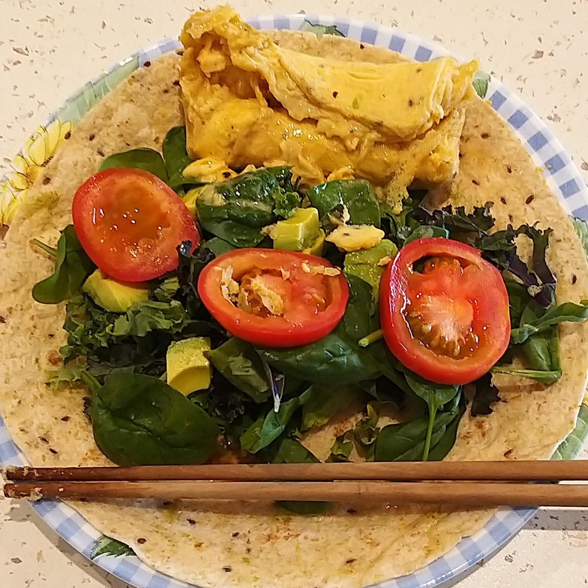

Hello all my foodbuddies! Calvin sim, @pedalingeggs here to cover day 1 of the Instagram takeover. My day usually starts at 5.30 am and I have double training sessions everyday 🚴🏼‍♂️. I start my first session early to have ample rest time in between training sessions. Breakfast is my most favorite meal to start the day. Rolled oats with chia seeds, honey, and soya milk - is a good sustainable breakfast that keeps me satiated👌🏼. Not forgetting coffee as well ☕️ I try to keep my meal preparation simple and easy without sacrificing nutrition quality. 😊 Saturday’s first session was a 3 hours base ride aiming to build endurance (at an intensity where you can talk to your friends) to the beach with my friend, @keemeng86. It can get very hot during the day and the average temperature was 39 degrees on Saturday 😝🥵 After training, I try to rehydrate and recover. I usually have some chocolate soya milk immediately when I get home followed by a light lunch such as a wholemeal wrap with scrambled eggs, fresh vegetables, avocado, and tomatoes 🌯. My 2nd session of the day was strength efforts (a similar road bike gear ratio, 53x14) on the track bike in the velodrome: 4 sets of 20 laps( 250 meters per lap). During training, I snack on muesli bars, these bars are my favorite ones, to keep me going ğŸ‘🼠Just before dinner, I usually do some core work like planks, pushups and hip band exercises. To close off the day, I will foam roll all the tender points (calves and ITB are the main culprits) and stretch to promote recovery and reduce chances of injury. Dinner started off with a bowl of fresh salad with gherkins, olives, tomatoes, and canned tuna. And some carbs and protein for main course: rice with beef stew was on the menu this Saturday. The beef stew was prepared in a slow cooker and was cooked since morning! On the days when I crave for sweet stuff, I will substitute it with a cup of greek yogurt topped off with some granola and fruits. Feel free to comment below if you have any questions!😊 — #athletetakeover #cyclinglife #cycling #sgathletics #singaporecycling #singaporecyclingfederation #omnium #sportsg #swimbikerun #ironmantri #singapore #perth
2020-01-19 07:58:01
Back to main page